Add an AWS PrivateLink Connection
To use AWS PrivateLink with Capella, add an AWS PrivateLink Connection.
Prerequisites
Before attempting to add an AWS PrivateLink Connection, make sure your environment conforms to all of the following requirements:
-
You have a project in your organization.
For more information about projects, see Projects Overview.
-
You have a database in your project that:
-
Has 44 nodes or less.
-
Has multiple availability zones configured.
-
Uses the Developer Pro or Enterprise plan.
For more information about how to create a database, see Create a Database.
-
-
You have the Project Owner role assigned to your user account.
For more information about project roles, see Project Roles.
-
You have the AWS Command Line Interface installed and configured on your computer.
-
You have your VPC ID, the Subnet ID of each of your subnets, and the Instance ID of each of your EC2 Instances.
Procedure
The procedure for adding an AWS PrivateLink Connection involves user activity in the Capella UI, on the command line, and in the AWS VPC UI. Make sure you have all these tools at hand, before you begin.
When ready, proceed as follows:
-
After you log into Capella, select the project that contains the database where you want to add an AWS PrivateLink.
-
On the Databases tab, select the database name. When the screen for the database appears, click on the Settings tab, near the upper right:
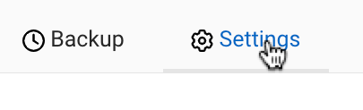 -
Click on the Private Endpoint tab, in the Networking section of the left-hand navigation panel.
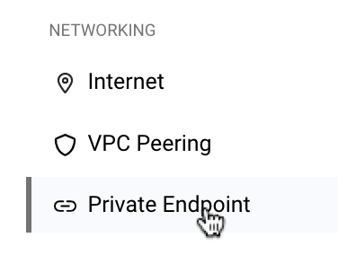 -
When the Private Endpoints screen appears, click on the Enable Private Endpoint button.
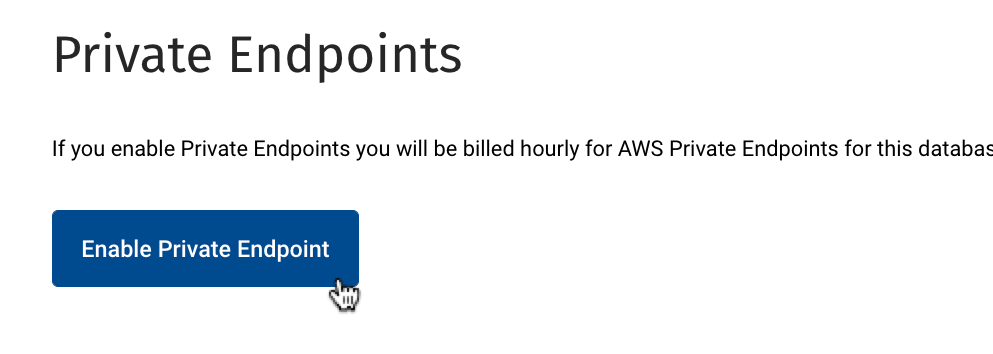 -
After you have clicked on Enable Private Endpoints, endpoints are enabled by Capella. This process might take ten minutes or more. When the process is concluded, the screen appears as follows:
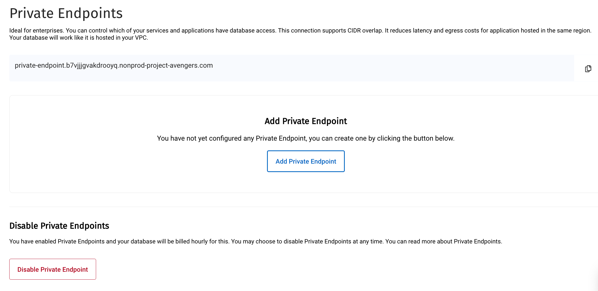 -
Click on the Add Private Endpoint button.
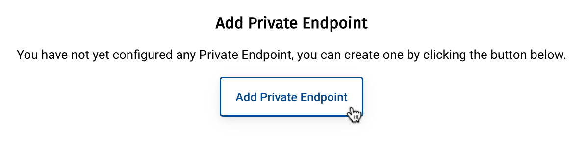The display now changes, to allow you to enter a VPC ID and Subnet IDs:
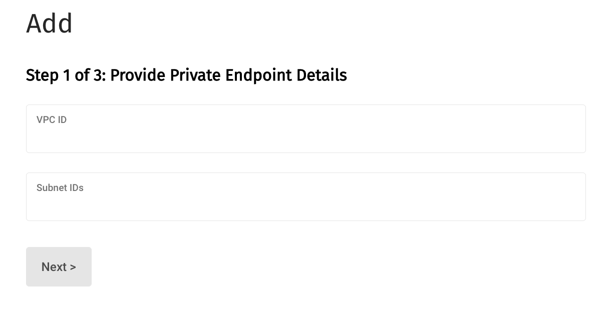 -
In the VPC ID field, enter your VPC ID. In the Subnet IDs field, enter each of your Subnet IDs, hitting return after each entry.
When you have entered your IDs, the display appears as follows:
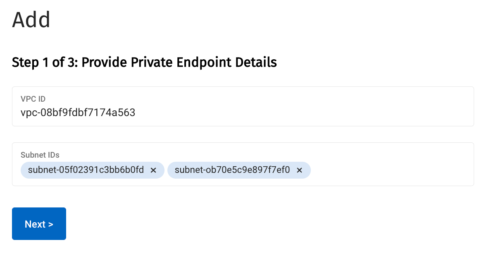 -
Click on the Next button.
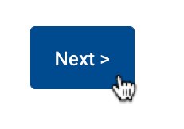The Complete Connection screen now appears:
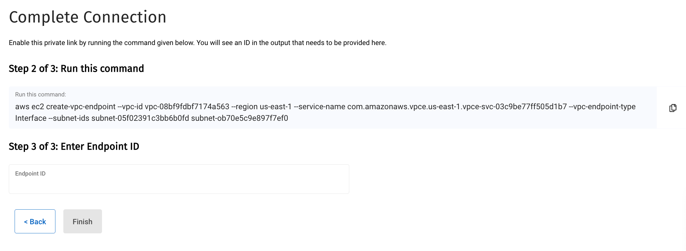 -
Copy the command that is displayed in the Run this command field. Open a terminal window on your desktop, paste the command into the terminal against the prompt, and run the command. Output appears as follows:
{ "VpcEndpoint": { "VpcEndpointId": "vpce-06da68c605432752f", "VpcEndpointType": "Interface", "VpcId": "vpc-08bf9fdbf7174a563", "ServiceName": "com.amazonaws.vpce.us-west-2.vpce-svc-015986e75057cc4e6", "State": "pendingAcceptance", "RouteTableIds": [], "SubnetIds": [ "subnet-05f92391c3bb6b0fd", "subnet-0b70e5c9e897f7ef0" ], "Groups": [ { "GroupId": "sg-01505951c7752141d", "GroupName": "default" } ], "PrivateDnsEnabled": false, "RequesterManaged": false, "NetworkInterfaceIds": [ "eni-08cb66b65644ac32e", "eni-0c824869e81a21fac" ], "DnsEntries": [ { "DnsName": "vpce-06da68c605432752f-1zrggw92.vpce-svc-015986e75057cc4e6.us-west-2.vpce.amazonaws.com", "HostedZoneId": "Z1YSA3EXCYUU9Z" }, { "DnsName": "vpce-06da68c605432752f-1zrggw92-us-west-2b.vpce-svc-015986e75057cc4e6.us-west-2.vpce.amazonaws.com", "HostedZoneId": "Z1YSA3EXCYUU9Z" }, { "DnsName": "vpce-06da68c605432752f-1zrggw92-us-west-2a.vpce-svc-015986e75057cc4e6.us-west-2.vpce.amazonaws.com", "HostedZoneId": "Z1YSA3EXCYUU9Z" } ], "CreationTimestamp": "2022-11-15T18:50:45.062000+00:00", "OwnerId": "429712224361" } } -
Copy the value of
VpcEndpointId, which is in the second line of the output (here,vpce-06da68c605432752f). Then, return to the Capella UI. -
Paste the VPC Endpoint ID into the Endpoint ID field:
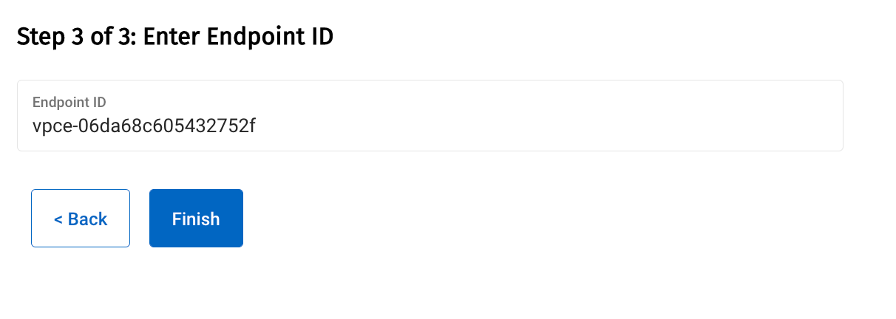 -
Click on the Finish button:
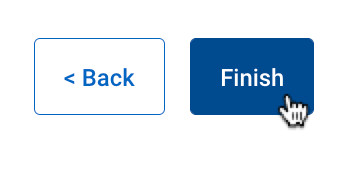After a few minutes, you are returned to the Private Endpoints screen, which now shows the private endpoint that you have added:
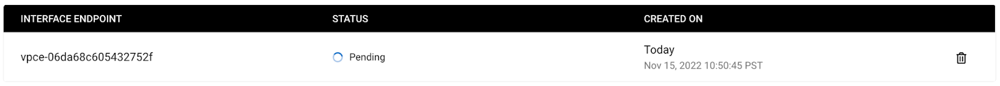 -
Bring up your AWS VPC console. Access your list of VPC endpoints:
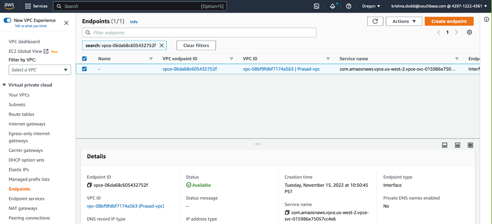Select the row for the endpoint.
-
Enable private DNS names for this endpoint. Access the Actions menu, located near the upper right; and select the Modify private DNS name option:
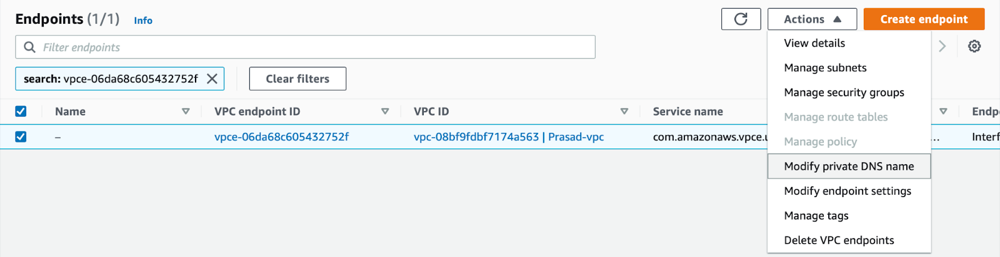
-
When the Modify private DNS name screen appears, make sure that the Enable for this endpoint checkbox is checked:
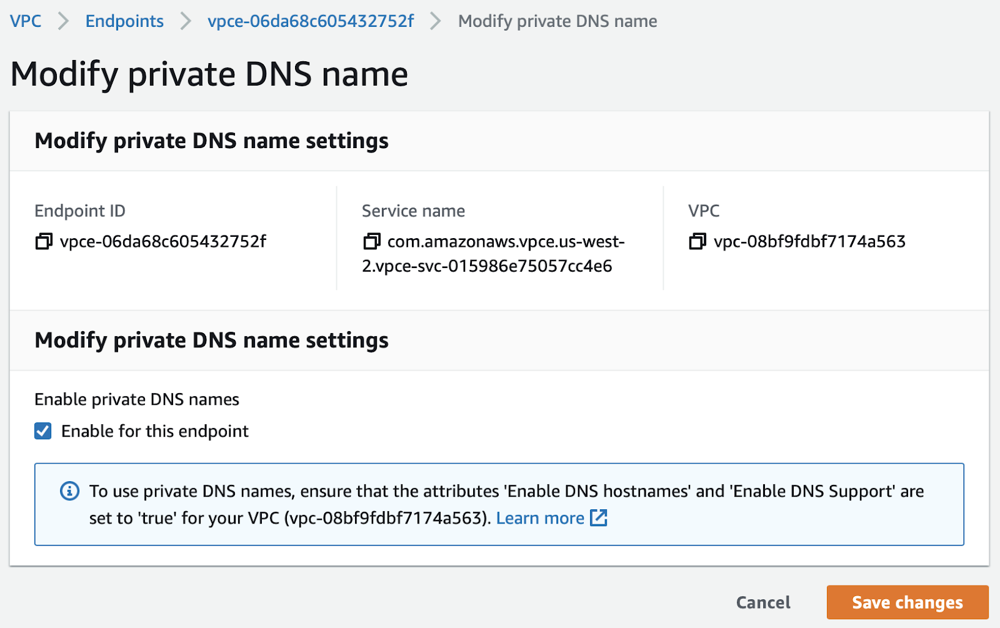
Then, click the Save Changes button.
-
Access the AWS VPC dashboard, and from the Actions menu, access Edit VPC settings:
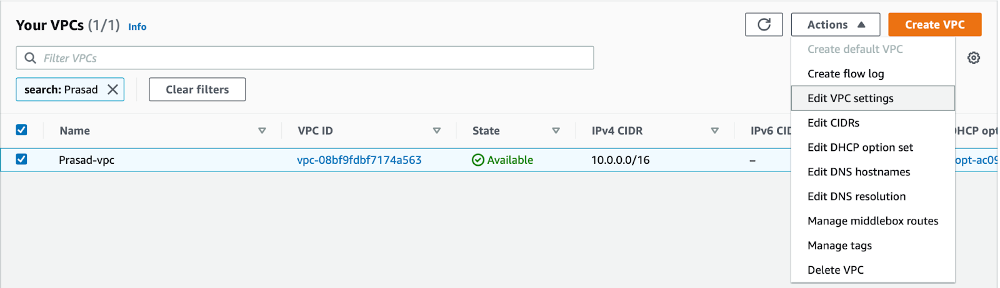 -
When the Edit VPC settings dialog is displayed, enable DNS resolution and DNS hostnames, by checking the respective checkboxes:
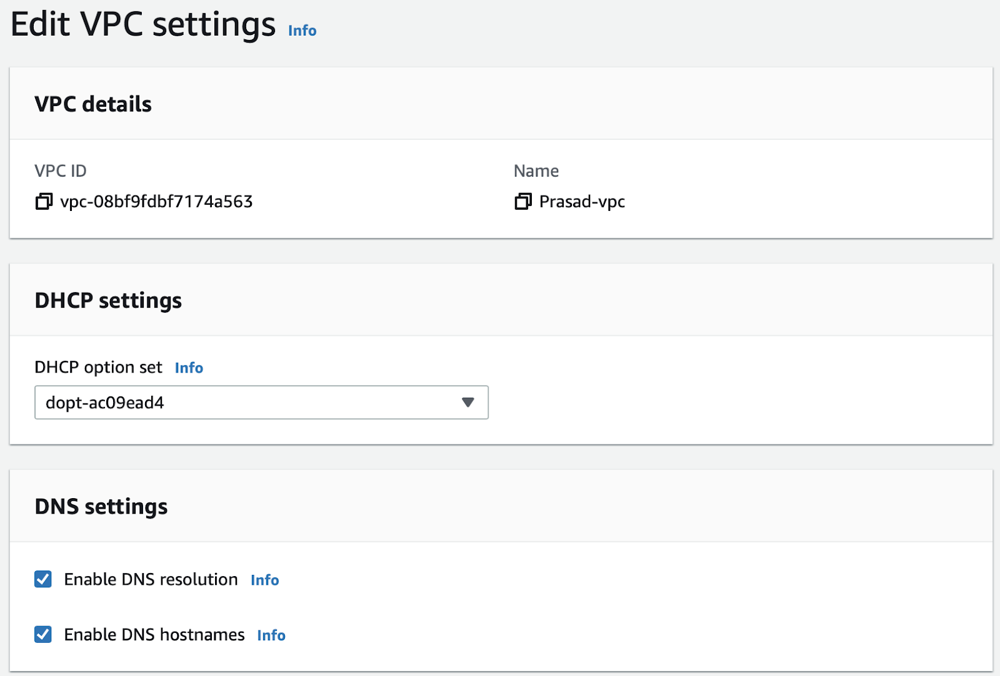Then, save. This completes enablement of DNS private names for this endpoint.
-
To add an Ingress Rule for the private endpoint, first, return to the VPC dashboard:
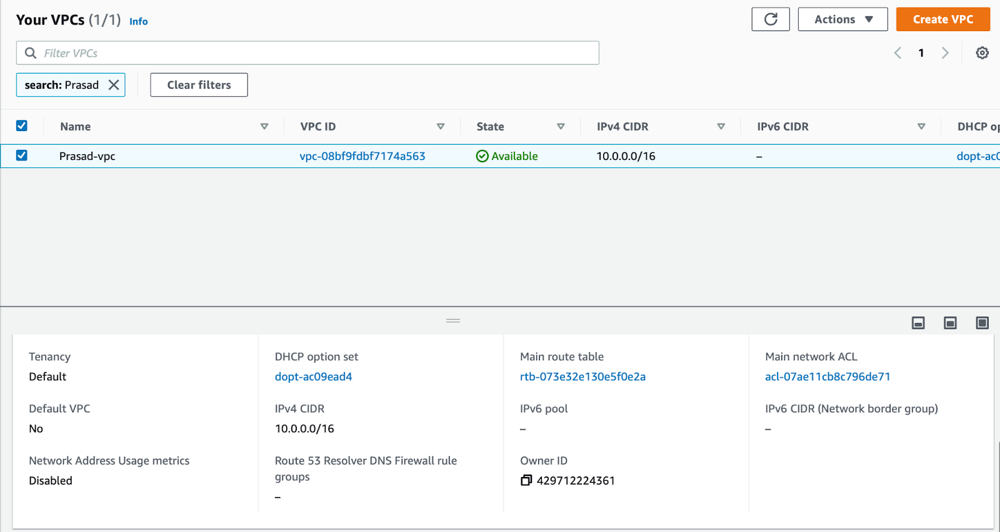
Make a note of the value displayed for IPV4 CIDR, which here is
10.0.0.0/16. You will enter this value on subsequent screens. -
Modify the endpoint’s Security Group. Click on Endpoints, in the VPC dashboard. When the Endpoints screen is displayed, select the endpoint for which you are configuring the Ingress Rule:
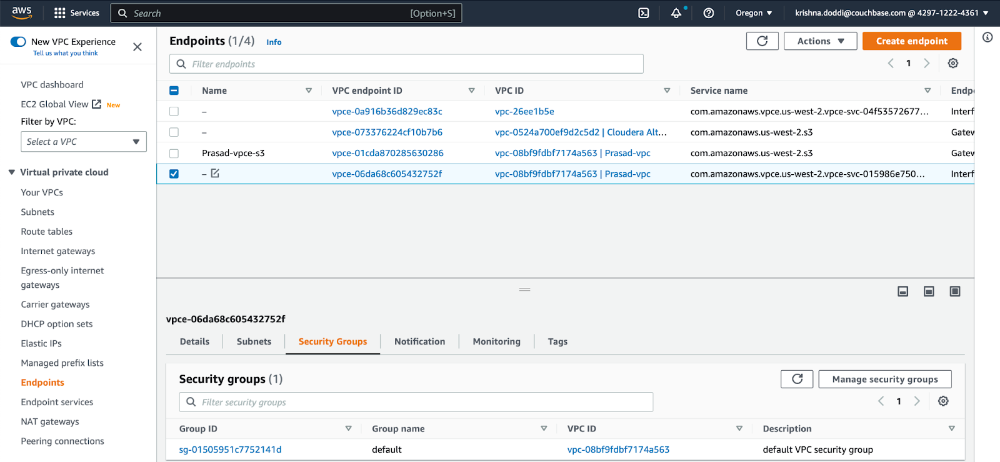In the Security groups panel, near the bottom of the screen, click on the link that appears under Group ID (this is your default VPC security group). The corresponding Inbound Rules panel is now displayed:
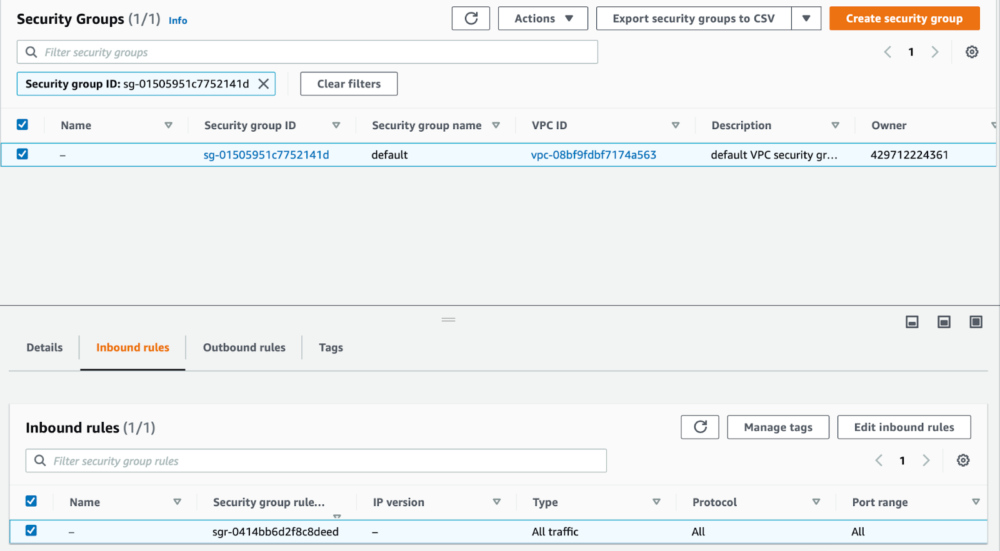 -
Click on the Edit Inbound Rules button. The Edit inbound rules dialog now appears:
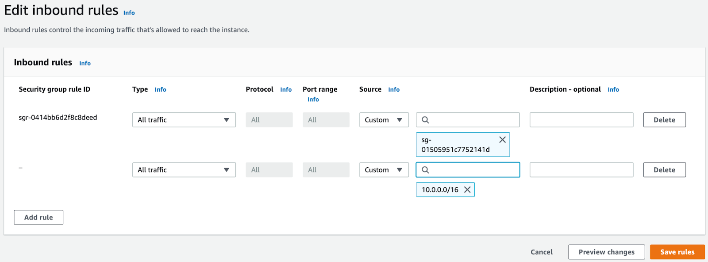Add the IPv4 CIDR that you previously noted. Then click the Save Rules button.
-
To configure network ACLs, first return to the VPC dashboard.
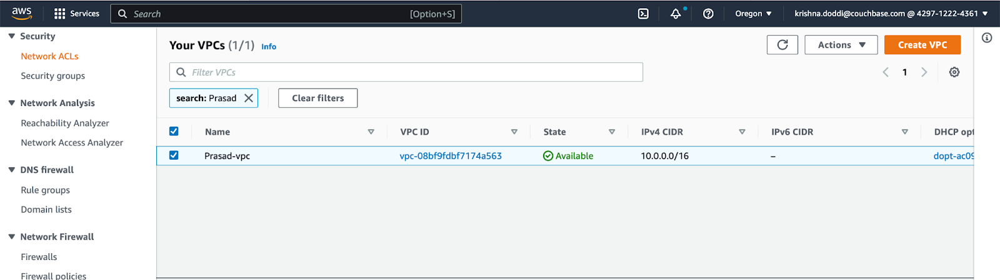 -
Click on Network ACLs, in the left-hand navigation panel. This brings up the Network ACLs screen:
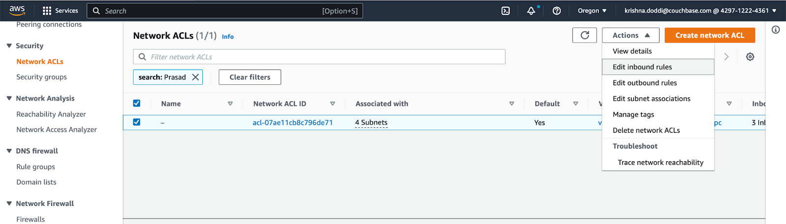Select the Network ACL associated with your VPC. Then, access the Action menu, and select Edit inbound rules.
-
When the Edit inbound rules screen appears, add a new inbound rule, by entering the IPv4 CIDR you previously noted into the appropriate field of the Source column:

Then click the Save Changes button.
-
Add an outbound rule, by following the same steps as you used to add your inbound rule: access the Network ACLs screen from the VPC dashboard, and select Edit outbound rules from the Action menu. The Edit outbound rules screen now appears:
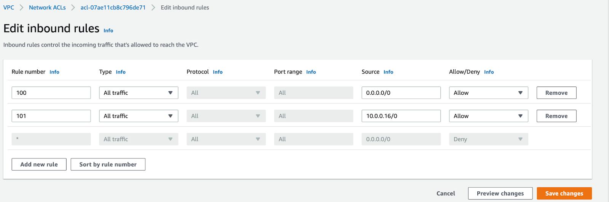For the new rule, specify Custom TCP in the Type column, and 1024-655345 in the Port range column. Then specify your IPv4 CIDR value in the Source column. Finally, click Save Changes.
-
Return to the Private Endpoints screen, in the Capella console. For several minutes, the display for the interface endpoint shows a Pending status:
Eventually, the status changes to Linked:
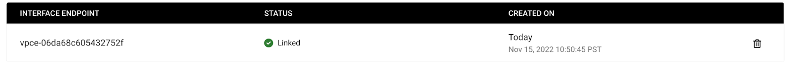
This concludes the procedure: the AWS PrivateLink Connection has now been established.